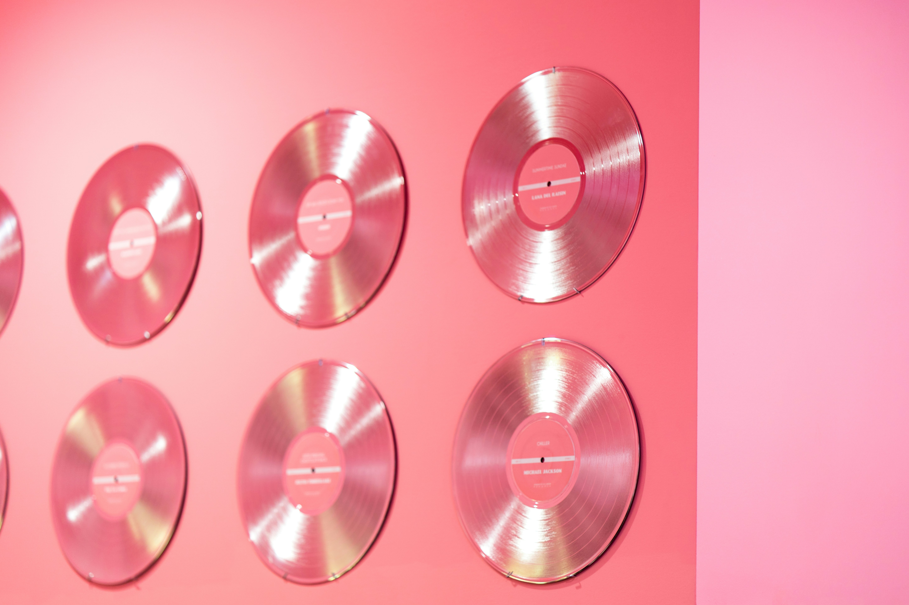
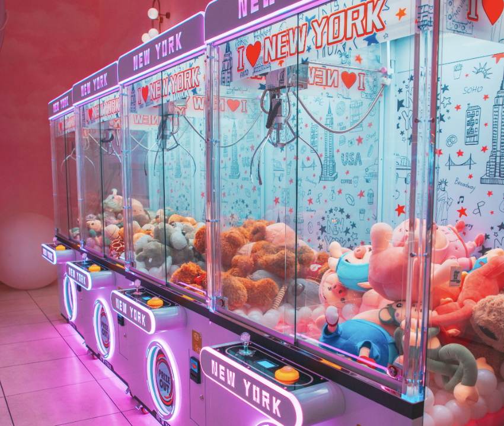
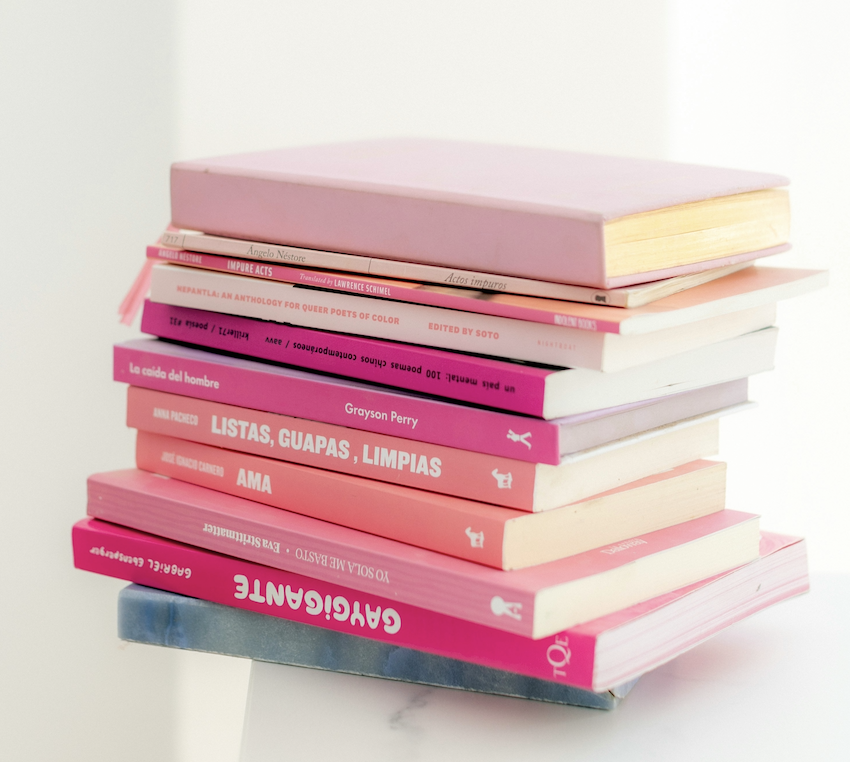

-
Muziek

-
Films

-
Games

-
Boeken

- Mijn beste muzical recomendations....
- De beste romcoms om met je vriendinnen of alleen te zien....
- Hier heb ik een lijst gemaakt van alle games die ik zelf leuk vind of positieve reacties over heb gehoord, enjoy!
- Hier heb ik een lijst gemaakt van al mijn favoriete boeken, van fantasy tot avontuur tot roman, er zit voor elke meid wat bij!